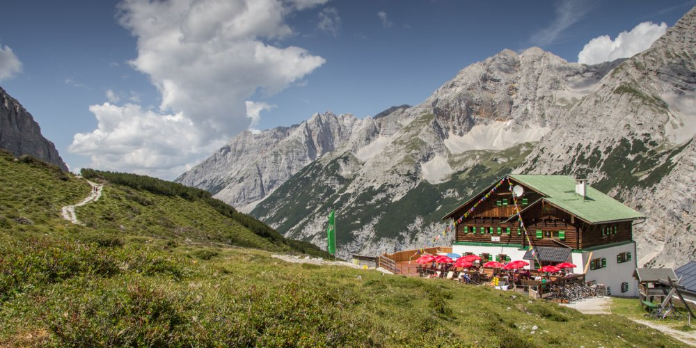
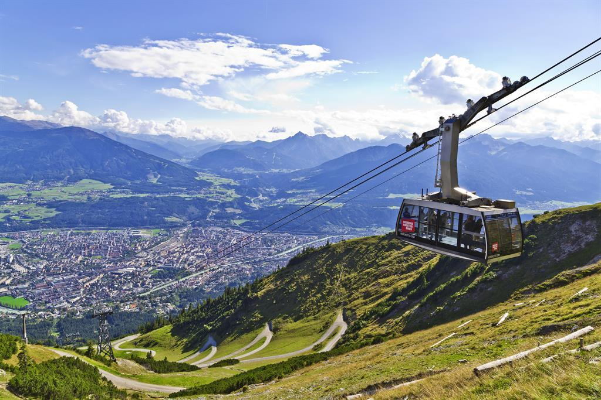

Goetheweg
Pfeis Hütte hike along the ridge and down to the Hafelekar cable car station, then down to the Hungerburg and Innsbruck.
Wake up in Pfeis Hütte |
 |
Hike the Goetheweg to Hafelekar cable car station |

|
Summit possibilities en route- Gleirschtalerbrandjoch |

|
The Nordkette Cable Car |
 |
Hike details
5.1 km
530 m elev. gain.
Duration: 2h.25m.
Hike description
| English via Google Translate without editing | Deutsch |
|---|---|
|
|
Auf der Terrasse der Hafelekar Bergstation genießen wir noch einmal den Tiefblick nach Innsbruck bevor wir unsere Rucksäcke schnappen und den Weg 219 "Goetheweg" Richtung Osten begehen. Der breite Bergpfad führt uns direkt zum Gleirscherjöchl und weiter zur Mühlkarscharte, wo wir die Stadt hinter uns lassen. Vor unseren Augen liegt das einsame Mühlkar. Am Fusse der Mannlspitze, vorbei am Zugspitzblick, schlägnelt sich der Weg über die Schotterreisen hinauf auf die Mannlscharte. Das waren auch schon die letzten Höhenmeter die wir bewältigen müssen. Auf der Mannlscharte haben wir einen guten Blick auf den letzten Wegabschnitt. Noch schnell was getrunken und hinab in die Pfeis und der gleichnamigen Schutzhütte. |
e-mail me if you have questions or comments about this site
Jump to Top